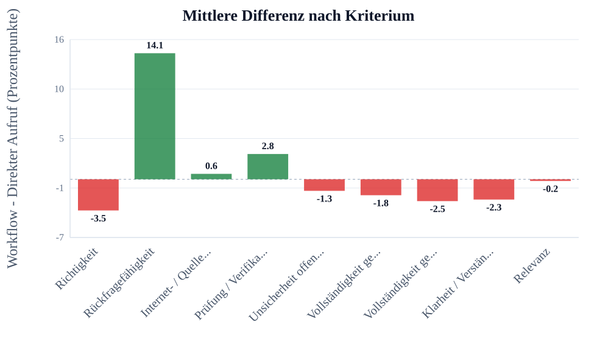
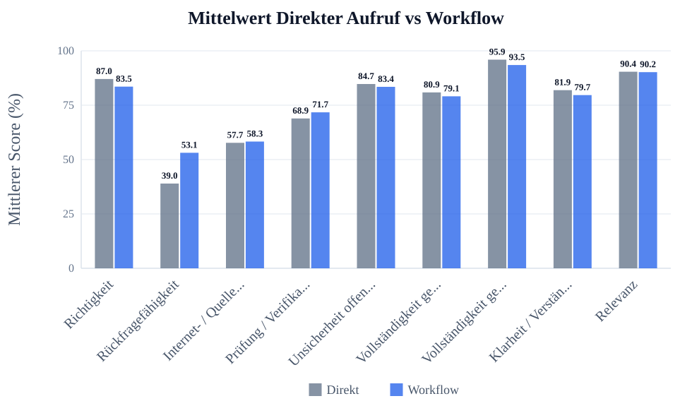
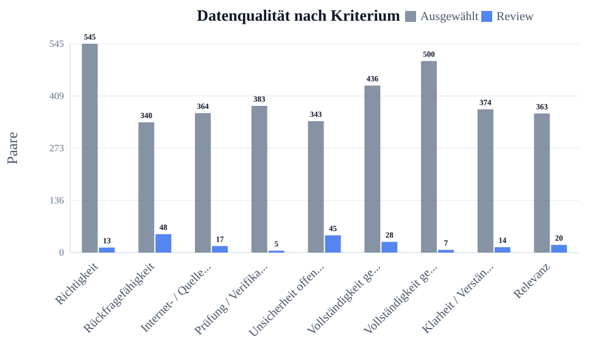
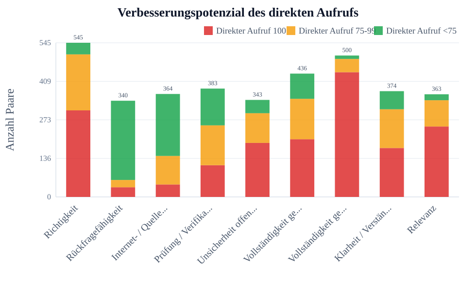

Ãœbersicht nach Kriterium
Auswahl
- Kriterien: Alle Kriterien
- Fragensets: default, example, flowmap_set7, flowreview_set7, impossibleforai, lausyprompt, promptoptimierung_schwierig, set1, set2, set3, set4, set5
- Run-Sets: Existing runs, run10, gpt3_prompt_schwer, lazy_gpt3, flowmap7, review7, set2_review, set2_more, set2_5, set3_flowmap, set4_flowreview, set3_more, set3_3, imposs_2_single, imposs_3_single
- Workflow-Setups: C – Prompt-Optimierung
- Modelle: GPT-4o Mini, Claude Haiku 3.5, DeepSeek Chat, GPT-4o, GPT-4.1, GPT-3.5 Turbo (legacy)
- Max Paare pro Kriterium: kein Limit
- Skip Paare pro Kriterium: 0
- Direkt-Score behalten: aus, nichts ausgeschlossen
- Stabiler Exportordner / Asset-Prefix: PO
Review-Antworten eingeschlossen: nein
Manuell ausgeschlossene Antworten eingeschlossen: nein
Kurze Ergebnistabelle
| Kriterium | n | Mittel Direkter Aufruf | Mittel Workflow | Diff. | p-Wert | Ergebnis |
|---|---|---|---|---|---|---|
| Richtigkeit | 545 | 87.0 | 83.5 | -3.5 | 0.0002 | signifikante Verschlechterung |
| Rückfragefähigkeit | 340 | 39.0 | 53.1 | +14.1 | <0.0001 | signifikante Verbesserung |
| Internet- / Quellenqualität | 364 | 57.7 | 58.3 | +0.6 | 0.6292 | nicht signifikant |
| Prüfung / Verifikation | 383 | 68.9 | 71.7 | +2.8 | 0.0368 | signifikante Verbesserung |
| Unsicherheit offenlegen | 343 | 84.7 | 83.4 | -1.3 | 0.2751 | nicht signifikant |
| Vollständigkeit gemäß Möglichkeit | 436 | 80.9 | 79.1 | -1.8 | 0.1199 | nicht signifikant |
| Vollständigkeit gemäß Frage | 500 | 95.9 | 93.5 | -2.5 | 0.0005 | signifikante Verschlechterung |
| Klarheit / Verständlichkeit | 374 | 81.9 | 79.7 | -2.3 | 0.0374 | signifikante Verschlechterung |
| Relevanz | 363 | 90.4 | 90.2 | -0.2 | 0.8207 | nicht signifikant |
LaTeX-gerenderte Tabelle:
{kind=link}
Felderklärung:
- Kriterium: Bewerteter Qualitätsbereich, z.B. Richtigkeit oder Vollständigkeit.
- n: Anzahl der vollständigen ausgewählten Paare, die in Statistik und Mittelwerte eingehen.
- Mittel Direkter Aufruf: Durchschnittlicher Score der Antworten des direkten Aufrufs in Prozent.
- Mittel Workflow: Durchschnittlicher Score der Workflow-Antworten in Prozent.
- Diff.: Mittlere Differenz Workflow minus Direkter Aufruf in Prozentpunkten.
- p-Wert: Wahrscheinlichkeit für einen mindestens so starken Effekt, falls in Wahrheit kein Unterschied besteht.
- Ergebnis: Kurze Interpretation des Tests, z.B. signifikante Verbesserung oder nicht signifikant.
Ausführliche Statistiktabelle
| Kriterium | n | Mittel Direkter Aufruf | Mittel Workflow | Diff. | SD Diff. | t-Wert | df | p-Wert | 95% KI | Cohen dz | Ergebnis |
|---|---|---|---|---|---|---|---|---|---|---|---|
| Richtigkeit | 545 | 87.04 | 83.54 | -3.50 | 21.96 | -3.716 | 544 | 0.0002 | [-5.34; -1.65] | -0.16 | signifikante Verschlechterung |
| Rückfragefähigkeit | 340 | 38.97 | 53.10 | +14.13 | 32.94 | 7.911 | 339 | <0.0001 | [+10.63; +17.63] | 0.43 | signifikante Verbesserung |
| Internet- / Quellenqualität | 364 | 57.68 | 58.28 | +0.60 | 23.86 | 0.483 | 363 | 0.6292 | [-1.85; +3.06] | 0.03 | nicht signifikant |
| Prüfung / Verifikation | 383 | 68.89 | 71.72 | +2.83 | 26.46 | 2.095 | 382 | 0.0368 | [+0.18; +5.48] | 0.11 | signifikante Verbesserung |
| Unsicherheit offenlegen | 343 | 84.74 | 83.44 | -1.30 | 21.98 | -1.093 | 342 | 0.2751 | [-3.62; +1.03] | -0.06 | nicht signifikant |
| Vollständigkeit gemäß Möglichkeit | 436 | 80.89 | 79.10 | -1.79 | 23.97 | -1.558 | 435 | 0.1199 | [-4.04; +0.46] | -0.07 | nicht signifikant |
| Vollständigkeit gemäß Frage | 500 | 95.94 | 93.49 | -2.45 | 15.69 | -3.492 | 499 | 0.0005 | [-3.83; -1.07] | -0.16 | signifikante Verschlechterung |
| Klarheit / Verständlichkeit | 374 | 81.93 | 79.65 | -2.27 | 21.05 | -2.088 | 373 | 0.0374 | [-4.41; -0.14] | -0.11 | signifikante Verschlechterung |
| Relevanz | 363 | 90.39 | 90.19 | -0.19 | 16.20 | -0.227 | 362 | 0.8207 | [-1.86; +1.47] | -0.01 | nicht signifikant |
LaTeX-gerenderte Tabelle:
{kind=link}
Felderklärung:
- Kriterium: Bewerteter Qualitätsbereich, z.B. Richtigkeit oder Vollständigkeit.
- n: Anzahl der vollständigen ausgewählten Paare, die in Statistik und Mittelwerte eingehen.
- Mittel Direkter Aufruf: Durchschnittlicher Score der Antworten des direkten Aufrufs in Prozent.
- Mittel Workflow: Durchschnittlicher Score der Workflow-Antworten in Prozent.
- Diff.: Mittlere Differenz Workflow minus Direkter Aufruf in Prozentpunkten.
- p-Wert: Wahrscheinlichkeit für einen mindestens so starken Effekt, falls in Wahrheit kein Unterschied besteht.
- Ergebnis: Kurze Interpretation des Tests, z.B. signifikante Verbesserung oder nicht signifikant.
- SD Diff.: Standardabweichung der paarweisen Differenzen; zeigt die Streuung des Effekts.
- t-Wert: Teststatistik des gepaarten t-Tests; wird mit dem kritischen Wert bzw. p-Wert beurteilt.
- df: Freiheitsgrade des Tests, hier normalerweise n minus 1.
- 95% KI: 95-Prozent-Konfidenzintervall der mittleren Differenz; enthält es 0, ist der Effekt unsicherer.
- Cohen dz: Effektstärke für gepaarte Daten; macht die Größe des Effekts vergleichbarer.
Tabelle zur Datengrundlage
| Kriterium | Gesamt | Gültig | Ausgewählt | Ausgelassen | Fehler | Review | Manuell ausgeschlossen | Unvollständig |
|---|---|---|---|---|---|---|---|---|
| Richtigkeit | 558 | 558 | 545 | 0 | 0 | 13 | 0 | 0 |
| Rückfragefähigkeit | 388 | 388 | 340 | 0 | 0 | 48 | 0 | 0 |
| Internet- / Quellenqualität | 382 | 381 | 364 | 0 | 0 | 17 | 0 | 1 |
| Prüfung / Verifikation | 388 | 388 | 383 | 0 | 0 | 5 | 0 | 0 |
| Unsicherheit offenlegen | 388 | 388 | 343 | 0 | 0 | 45 | 0 | 0 |
| Vollständigkeit gemäß Möglichkeit | 467 | 464 | 436 | 0 | 3 | 28 | 0 | 0 |
| Vollständigkeit gemäß Frage | 516 | 507 | 500 | 0 | 8 | 7 | 0 | 1 |
| Klarheit / Verständlichkeit | 388 | 388 | 374 | 0 | 0 | 14 | 0 | 0 |
| Relevanz | 383 | 383 | 363 | 0 | 0 | 20 | 0 | 0 |
LaTeX-gerenderte Tabelle:
{kind=link}
Felderklärung:
- Kriterium: Bewerteter Qualitätsbereich.
- Gesamt: Alle gefundenen Paare nach den gesetzten Filtern vor Bereinigung.
- Gültig: Paare ohne Fehler und ohne unvollständige oder unbewertete Seite.
- Ausgewählt: Paare, die tatsächlich in Analyse, Statistik und Charts verwendet werden.
- Ausgelassen: Paare, die durch den optionalen Direkt-Score-Behalten-Bereich ausgeschlossen wurden, weil der direkte Aufruf außerhalb des eingestellten Bereichs lag.
- Fehler: Paare, bei denen mindestens eine Seite einen technischen Fehler hatte.
- Review: Paare mit Review-Markierung; standardmäßig nicht in der Analyse enthalten.
- Manuell ausgeschlossen: Paare, die vom Nutzer manuell aus der Analyse ausgeschlossen wurden.
- Unvollständig: Paare mit fehlender Seite, laufendem Run oder fehlendem Score.
Diagramme
Mittlere Differenz nach Kriterium
| Feld | Wert |
|---|---|
| Datei | PO/images/00_overview/chart_mean_difference_by_criterion.svg |
| Bedeutung | Einheit: Prozentpunkte. Bedeutung: Workflow minus Direkter Aufruf. Positive Werte bedeuten Verbesserung durch den Workflow, negative Werte Verschlechterung. |

{kind=link}
Felderklärung:
- X-Achse / Kriterium: Verglichenes Bewertungskriterium.
- Y-Achse / mittlere Differenz: Workflow minus Direkter Aufruf in Prozentpunkten.
- Y-Skala: Skala der mittleren Differenzwerte mit Hilfslinien.
- Zahlen auf Balken: Konkrete mittlere Differenz pro Kriterium.
- 0-Linie: Kein Unterschied zwischen Workflow und Direkter Aufruf.
- Positive Werte: Workflow wurde im Mittel höher bewertet.
- Negative Werte: Direkter Aufruf wurde im Mittel höher bewertet.
Mittelwert Direkter Aufruf vs Workflow
| Feld | Wert |
|---|---|
| Datei | PO/images/00_overview/chart_mean_direkter_aufruf_vs_workflow.svg |
| Bedeutung | Zeigt die durchschnittlichen Scores pro Kriterium und macht mögliche Deckeneffekte sichtbar. |

{kind=link}
Felderklärung:
- Kriterium: Bewerteter Qualitätsbereich.
- Direkter Aufruf: Mittlerer Score der Antworten des direkten Aufrufs.
- Workflow: Mittlerer Score der Workflow-Antworten.
- Y-Achse: Durchschnittlicher Score in Prozent.
- Y-Skala: Skala von 0 bis 100 Prozent mit Hilfslinien.
- Zahlen auf Balken: Konkreter Mittelwert pro Methode.
- Zweck: Schneller Vergleich der beiden Methoden pro Kriterium.
Datenqualität nach Kriterium
| Feld | Wert |
|---|---|
| Datei | PO/images/00_overview/chart_data_quality_by_criterion.svg |
| Bedeutung | Zeigt ausgewählte Paare und Review-Paare pro Kriterium zur Transparenz der Datengrundlage. |

{kind=link}
Felderklärung:
- Kriterium: Bewerteter Qualitätsbereich.
- Ausgewählt: Paare, die in die Analyse eingehen.
- Review: Paare, die manuell geprüft werden sollten.
- Y-Achse: Anzahl der Paare.
- Y-Skala: Skala der Paaranzahl mit Hilfslinien.
- Zahlen auf Balken: Konkrete Anzahl der Paare.
- Zweck: Zeigt, ob die Datengrundlage pro Kriterium stabil genug ist.
Verbesserungspotenzial des direkten Aufrufs
| Feld | Wert |
|---|---|
| Datei | PO/images/00_overview/chart_ceiling_effect_by_criterion.svg |
| Bedeutung | Zeigt pro Kriterium, wie viele Antworten des direkten Aufrufs bereits 100%, nahe 100% oder deutlich darunter lagen. Viele 100%-Werte bedeuten Deckeneffekt: Der Workflow kann kaum noch verbessern, aber verschlechtern. |

{kind=link}
Felderklärung:
- Direkter Aufruf 100 / rot: Direkter Aufruf war bereits perfekt; kaum messbares Verbesserungspotenzial.
- Direkter Aufruf 75-99 / orange: Direkter Aufruf war nahe an perfekt; wenig Verbesserungspotenzial.
- Direkter Aufruf <75 / grün: Direkter Aufruf hatte klarere Fehler; Workflow konnte eher verbessern.
- Y-Achse: Anzahl der Paare.
- Y-Skala: Skala der Paaranzahl mit Hilfslinien.
- Zweck: Macht den Deckeneffekt pro Kriterium sichtbar.